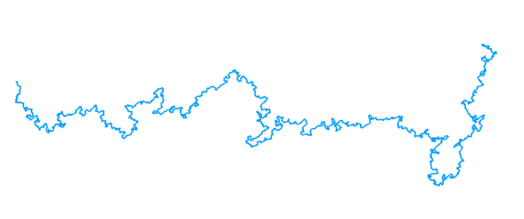

Broadly speaking, my work revolves around problems and methods from probability theory and mathematical physics. I have contributed to the development and application of a rigorous renormalisation group method for studying the critical behaviour of spin systems and models of self-interacting walks. This method was originally developed by Roland Bauerschmidt, David Brydges, and Gordon Slade.
See my research statement for more information.
